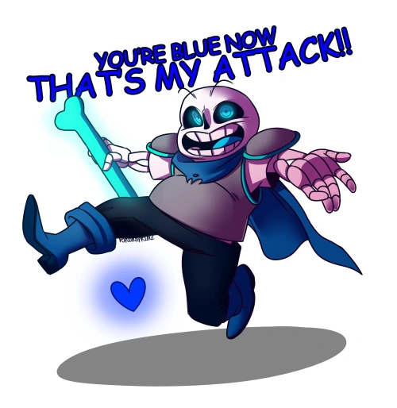
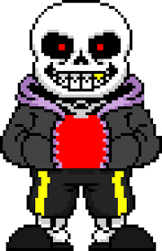
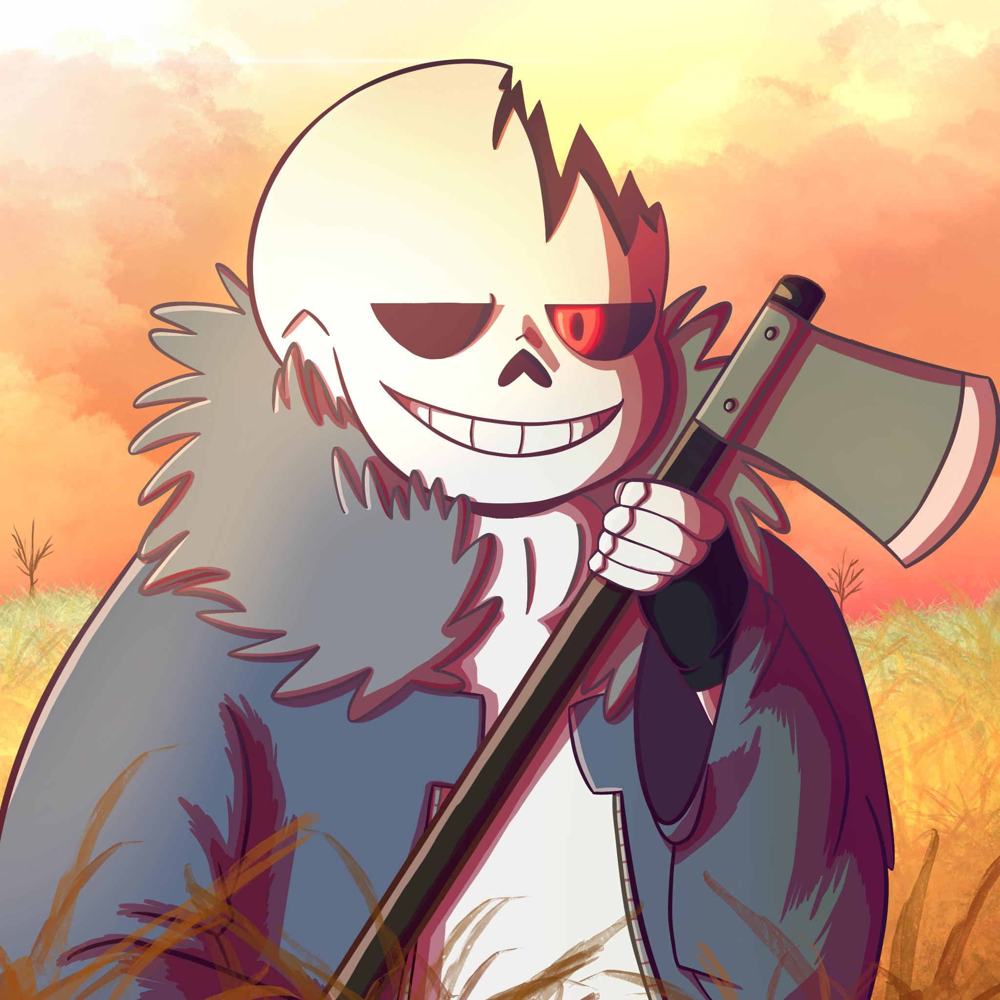
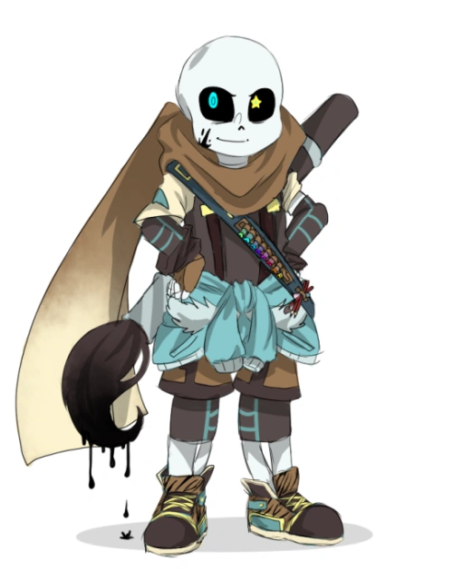

Underswap Sans
Underswap is an AU where all the main characters of undertale have swaped personalities with their counterpart, for example Sans and Papyrus, this AU is generally associated with more wholesome content.
Underfell Sans
Underfell is an AU where the main character's moralities have been swaped meaning originaly kind monsters become evil and vice versa.
Horrortale Sans
Horrortale is an AU set many years after a neutral run of the game where the monsters have gone insane as a result of the shutdown of the CORE (reactor that provides power to the underground) and the severe lack of resources available.
Ink Sans
Ink sans is an aternate version of sans which has the ability to create objects out of ink, he serves as the protector of AUs in general and he encourages people to create their own Undertale AU. Ink sans also has his own theme song and a custom coded fight fangame.
Error Sans

Error sans is an aternate version of sans which is said to have fallen into a dimension between universes and gliched beyond repair. Error Sans now dedicates himself to clense the multiverse of all AUs.